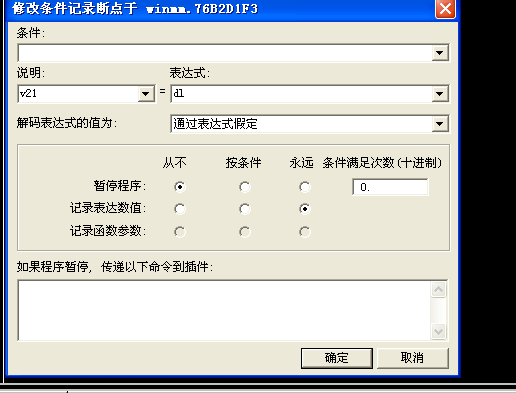

0X00 漏洞描述
CVE-2012-0003是微软的多媒体库 winmm.dll 在处理 MIDI 文件时，由于对数据处理不当导致的堆溢出，攻击者可在网页中嵌入恶意构造的 MIDI 文件来远程执行任意代码。
0X01 分析环境
目标系统：Windows XP SP3
调试器：OllyDebug
反汇编器：IDA Pro
漏洞软件：IExplore 6、Media Player
Metasploit：漏洞复现、利用
0X02 基本信息
我们首先开启IE的堆页
然后打开ie 用Immunity Debugger附加进程 然后将poc文件拖进ie 发现断在了0x76B2D224
查看EBP的地址 栈回溯发现该函数被调用于0x76B2D038
该函数位于winmm.dll中 使用IDA分析该dll文件
我们找到V23和V20赋值的点
我们可以看到V20是由V1赋值而来的 而V1=wParam
其中wParam就是漏洞函数midiOutPlayNextPolyEvent的传递参数 而V20崩溃的可能性较低 所以我们来看下V23的来源
下图可以看到V23主要受V21和V13的影响
我们经过一系列分析发现V13经过了V11
V9
V2
以及最后的V1得来
然后V21也是由V13得来的
我们现在给各个参数下条件断点，观察各个值的变化 下面是对应参数的代码地址
1 | | 变量 | C代码 | 汇编指令 | 记录值 | 地址 | |
给上面的参数都下类似于这样的断点

我们下的断点总共如下
接下来重新运行程序 我们通过观察日志文件可以看出V1 V2没变 V9递增 V11 V13不变且相等 V21等于V11/V13的最低位 V11=V13=0x007DB29F
我们在样本文件中也可以找到对应的
下来看一下midi的文件格式
根据文件格式分析得到触发漏洞的是0x9x或者0x8x的音轨事件 V11和V13是包含参数的音轨 V21是音轨事件的类型
访问异常的时候 V11=V13=007DB29F 我们选择V11触发异常的地址 将其设置为0x007DB29F时断下
重新运行然后程序会停在此处往下运行找到溢出点
我们继续查看esi的值 即为IDA中V20的值 最后发现是由参数a1得来
继续通过IDA的交叉引用功能查看函数被调用自fptc函数
在该函数中发现调用用的参数来自V6 而V6=wParam
查看gpEmuList的引用情况，看“up”方向，w-写操作的，最终找到76B2CDAA函数
而76B2CDAA函数里面又调用了76B2B29D函数
这个函数却是个堆空间分配函数
由此可得 esi是向堆空间申请0x400字节的内容 我们就可以看到漏洞是如何产生的 申请0x400字节空间的内容 赋值给esi 然后在处理“打开音符”事件时 偏移空间的大小为0x419 可以看出申请的空间不够从而导致堆溢出产生漏洞